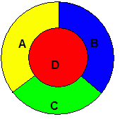
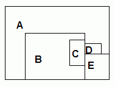
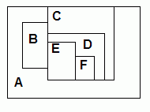

There are two sets of exercises here, using the simple Deductive Data Retriever:
all-differentAnyone should be able to work on the logic rule problems. Watch out for infinite loops! But changing how the retriever works should wait until you're feeling confident about programing very recursive code.
These exercises require the following files from the C25 library:
ddr-tests.lisp and ddr-exs-tests.lisp define all their tests in the package named ddr-tests. The easiest way to work on these exercises is to write all your code in the ddr-tests package, that is, create a file and start the file with (in-package #:ddr-tests).
Feel free to create new test cases!.
Tests: member in
ddr-exs-tests.lisp
Define the predicate (member x l) to return
true if and only if x is a member of the list l,
where lists are represented using the same (cons x y)
functional terms used in the append example
in ddr-tests.lisp
Tests: all-different in
ddr-exs-tests.lisp
We rarely need an "is equal" predicate with a deductive retriever. For example,
if you want to say some binary relationship always holds for an object
with itself, just say (relation ?x ?x), not (<- (relation ?x ?y)
(equal ?x ?y)).
On the other hand, we do often need an "is different" predicate. For example, in the Monkey and Bananas code in ddr-tests.lisp, we want to the monkey to go to the box only if the monkey's current location is different than the box's location.
To make it easier to assert (different x y),
the code in the Monkey and Bananas formulation
in ddr-tests.lisp defines
a forward-chaining rule so that asserting (different x y)
automatically asserts (different y x). (Why can't this
be a backward-chaining rule?)
That forward-chaining rule cuts the number of assertions needed in half, but, if we have N objects, we still need to write order(N2) assertions.
Define a forward-chaining rule for the predicate
(all-different list). all-different
takes a list represented
with the (cons x y) functional terms used in the predicates
append and member, and asserts that every
item in the list is different from every other item.
Tests: color-map1, color-map2, and
color-map3in
ddr-exs-tests.lisp
The map coloring problem has a long history. The problem is simple: given a map of various countries bordering each other, color the map using the fewest number of colors, such that no countries sharing a border of more than a point have the same color. For many years, it had been proven that 5 colors was sufficient for any flat map, no matter how complex, and that no map was known that needed more than 4. It finally required a computer to generate the complete proof that 4 was enough.
Here are three small maps, one already colored, the others left for you to figure out:
|  |  |  |
Here is a more complicated map that Martin Gardner claimed required 5 colors.
You can encode a map coloring problem in logic with:
Define a KB with the colors red, blue, green and yellow.
Then define map coloring rules for the predicate
(colors-for map a-region-color b-region-color c-region-color...),
so that the test cases below pass.
Note that colors-for is given a different
number of arguments for each map. This is not a mistake nor
anything you have to treat specially.
You can have rules for all three maps at the same time.
Side question: The above maps all have 24 possible solutions. Can you come up with a map that doesn't have 24 possible solutions?
Tests: shakey-1 in
ddr-exs-tests.lisp
Shakey was one of the first intelligent robots in AI. Many people worked on many aspects of the system, from computer vision to motion, but the part relevant here is Cordell Green's application of logic programming to the planning problem, details of which can be found in "Application of Theorem Proving to Problem Solving." This paper does the Monkey and Bananas problem, Towers of Hanoi, and robot planning.
A common problem in early robotic planning was moving boxes from one room to another, given information about box locations (current and desired), room locations, doors being open or closed, etc. Several kinds of information need to be represented:
For this exercise, create a set of facts and rules to allow the Retriever to solve simple Shakey problems. Follow the model of the Monkey and Bananas example in ddr-tests.lisp.
For Version 1.0, assume that Shakey only has to move 1 box from 1 room
to another, and there are no locked doors. The term for
representing a state is simply (v1-state robot-location
box-location).
There are just two
actions that change state:
(MOVE-TO location): the robot moves to a
location, where a location can either be the hall or a room(PUSH-BOX location1 location2):
the robot pushes a box from one location to another.To keep things simple, ignore the subproblem of finding paths from rooms to rooms. Instead, assume that all rooms are connected to the hall, so the rules for moving and pushing boxes from one room to another are simply:
Use the same PLAN-FOR framework used in the
Monkey and Bananas code in ddr-tests.lisp.
You should only need to define:
RESULT for what happens to states
when you move and push boxesACTION-FOR for choosing an action,
given a current state and a goal stateThe ACTION-FOR rules are where you make the robot
smart enough to avoid getting into endless loops.
Tip: use all-different to quickly say that room1, room2 and room3 are all different.
Tests: shakey-2 in
ddr-exs-tests.lisp
This is the hardest of the three Shakey exercises. When Shakey 1.0 is working, extend it to handle locked rooms. The robot should be able to unlock a room from the hallway, but not from inside the room. A robot can only enter or leave a room, when moving or pushing a box, if it's unlocked.
The easiest way to do this is by extending the state to include a list of the unlocked rooms. Make a new version of Shakey 1.0, where:
(v2-state robot-location box-location unlocked-room-list)
MOVE-TO
and PUSH-BOX require the rooms
involved to be unlocked
UNLOCK
which lets a robot in the hall unlock any room, i.e., add
it the list of unlocked roomsThe test cases start with easy cases, where the room the robot needs to enter, is in the unlocked list. The later cases start with an empy list of unlocked rooms.
Tip: use member to determine if a room is unlocked, i.e., in the list of unlocked rooms.
Tests: shakey-3 in
ddr-exs-tests.lisp
When Shakey 2.0 is working, extend it to handle multiple boxes. We will assume that there's at most one box in a room, so all we need to do is give a list of the rooms that have a box in them. Shakey's goal is to move all such boxes into a destination room.
There's not a lot of rules needed to do this. Most of the work will still be done by the Shakey 2.0 rules. The trick is to create a new state that contains:
Capture this with the state form
(v3-state robot-location box-room-list unlocked-room-list)
The robot is done when box-room-list is empty. If the list isn't empty, the robot should
To combine plans, use the rules for APPEND
defined in ddr-tests.lisp.
These exercises can make the Retriever less prone to infinite loops, though they may also make it run a bit slower.
Do these as "patch files." That is, don't change the code in ddr.lisp, but create a new file, e.g., ddr-patch.lisp. This file should be in the ddr package and contain only the new and changed definitions necessary to change the Retriever. That way I can see your changes in one place and test them, if necessary, by loading the original ddr.lisp and your patches.
Make sure all the old tests in ddr-tests.lisp continue to work as you modify the retriever, unless the modification makes some test inappropriate.
The email rules still apply. Use the Lisp Critic on your code before sending.
This one's easy, if you've done the I/O chapter.
Define (assert-file pathname) to assert every fact and/or rule in the file named by pathname. It should return a count of how many items were asserted.
movies.lisp is a very large file of movie facts, adapted from a data file for a Prolog course. Test your code on that. It should say that it loaded 2909 items. Make sure you've compiled ddr.lisp before trying to load this file, otherwise Allegro may never finish!
It's easy to throw the Retriever into an endless loop, e.g.,
> (tell '(<- (married ?x ?y) (married ?y ?x))) > (tell '(married john mary)) > (ask '(married mary john))
Some common loops can be caught by keeping a stack of current goals, and, when adding to this stack, checking to see if the new query matches (unifies) with a query on the stack already. If so, then you're in trouble, and should quit the search with a failure.
Done correctly, the above example should return an answer for both queries, but should return false for the query (ask '(married brad angeline)).
The goal of this exercise is to make it possible to get answers one at a time from the Deductive Retriever, somewhat the way the Prolog interpreter works. It should be possible to get one answer and stop, and not pay the cost of looking for other answers. This approach has two advantages. First, if one answer is sufficient, you can get it faster. Second, if a query has an infinite number of answers, a particular application can ask for the first N answers.
More specifically, you need to
The new ask should still pass all the tests in ddr-tests.lisp.
The syntax of ask-1 is like ask, i.e., (ask-1 query [ form ]), except that query is also optional. The semantics of ask-1 is:
Here's an example of how ask-1 should work with one of the test knowledge bases in ddr-tests.lisp:
DDR-TESTS 16 > (make-tiger-kb) ... DDR-TESTS 17 > (ask '(can-satisfy-hunger ?x)) ((CAN-SATISFY-HUNGER ANTELOPE) (CAN-SATISFY-HUNGER TIGER)) DDR-TESTS 18 > (ask-1 '(can-satisfy-hunger ?x)) (CAN-SATISFY-HUNGER ANTELOPE) DDR-TESTS 19 > (ask-1) (CAN-SATISFY-HUNGER TIGER) DDR-TESTS 20 > (ask-1) NIL
As with ask, if form is omitted, it should default to query. If (ask-1) is evaluated and no previous query has been specified, (ask-1) should return false.
This problem has both a conceptual challenge and a software programming challenge. The conceptual challenge is how to represent the state of the deductive search in a way that supports getting answers pne at a time. The programming challenge is how to make as few changes as possible to the existing tested Retriever code.
The current code uses a simple uniform recursive logic: explore all branches and append all results. This automatically takes care of branches that lead to no results or many. But it means that the code has many functions calling other functions recursively, expecting to get lists of all answers back. If now only one answer is returned, how can the basic logic structure be kept?
The answer is generated lists, also known as lazy lists and (in Abelson and Sussman's Structure and Interpretation of Computer Programs) streams. A generated list is a data structure with list-like operations, analogous to car and cdr, but the elements of a generated list may not exist until accessed. That is, the elements may be generate on demand.
The glist package defines some basic functions that create and manipulate generated lists. Most of these functions are analogous to the standard list functions: gcar, gcdr, gappend and so on.
Generated lists are not only a natural way to represent a list of solutions that should be calculated only when requested. Because generated list functions look like regular list functions, converting list code to generated list code is relatively straightforward. Instead of consing or appending lists of all answers, you gcons or gappend them. You need to do this both in the main code and some of the logic extensions, like match-and. Do not, however, convert all lists to lazy lists. Many lists in the Retriever code, e.g., lists of bindings should remain normal lists. Only lists that require recursively finding alternatives should be converted.
You'll need two top-level global variables where (ask-1 query form) can save information for subsequent calls:
ask-1 should set these variables when a new query and/or form is passed in. ask-1 should then pop off the next answer from the generated list. ask simply calls ask-1 repeatedly until it returns false, and collects all the answers.

Comments?  Send mail to Chris Riesbeck.
Send mail to Chris Riesbeck.